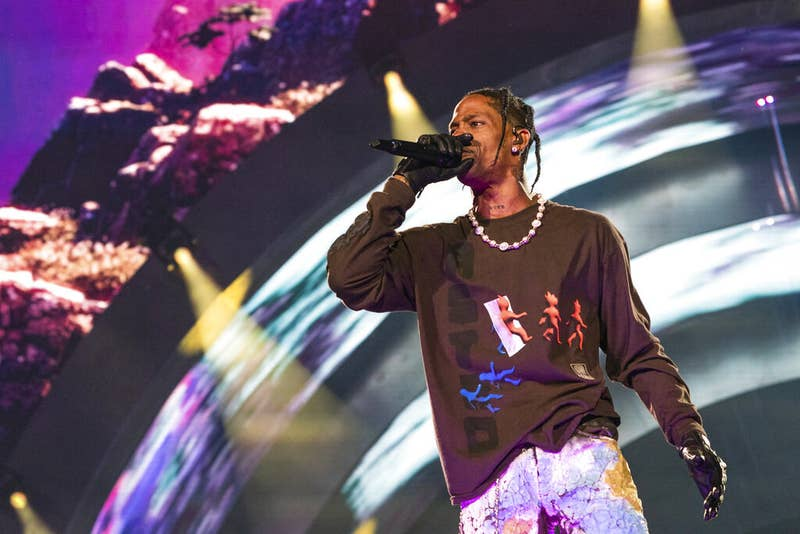

Erika Goldring / WireImage
“They have mosh pits — I’m used to that,” one festivalgoer told BuzzFeed News. “This was something completely different. I mean, nothing could’ve prepared me for this.”


Erika Goldring / WireImage
Madeline Eskins and her boyfriend, Sam, at Astroworld Festival on Nov. : Photo courtesy of Madeline Eskins
“I mean, the amount of pushing. People rush the stage whenever Travis comes on,” Eskins said. “They have mosh pits — I’m used to that. This was something completely different. I mean, nothing could’ve prepared me for this.” “I tried to look at my boyfriend; I couldn’t even turn my head to look at him,” she told BuzzFeed News. “I told him I needed to get out of there. He was like, ‘We can’t.’ And then I, honestly, I thought I was going to die.”  Officials said 50,000 people were at the concert when the incident happened. Medical staffers at the festival were “quickly overwhelmed,” Houston Fire Chief Samuel Peña said, and more than 300 people were treated at the field hospital. Astroworld, an annual music festival produced by Scott, was sold out in under an hour this year when tickets were released in May. About 100,000 people were expected to attend the event, which the Houston rapper headlined, Variety reported. The festival was not held last year due to the pandemic. In a statement addressing the tragedy early Saturday, organizers said they were supporting local officials in their investigation. The Saturday concert has been canceled.“I’m absolutely devastated by what took place last night,” Scott wrote in a statement$750 million lawsuit filed against Travis Scott, Drake on behalf of Astroworld victims
Our Socials ↓